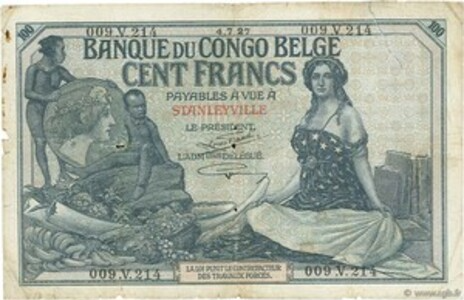

BE · 1912Banque du Congo Belge — 100 francs · cédula.
Banque du Congo Belge — 100 francs
Descrição curta
Bélgica · 1912 · cédula · regime militar.
Descrição longa
Ficha do corpus iconocrático para Banque du Congo Belge — 100 francs: alegoria feminina como tecnologia visual do Estado, classificada no regime militar.
Fonte & proveniência
- Crédito
- Imagem do corpus ICONOCRACIA: Banque du Congo Belge — 100 francs.
- Direitos
- Uso acadêmico e curatorial; verificar direitos junto à instituição detentora antes de reutilização comercial.
- Licença
- Todos os direitos reservados salvo indicação específica da fonte.
Dados canônicos
Esta ficha é gerada a partir de data/corpus.json. Última geração: 2026-06-24.